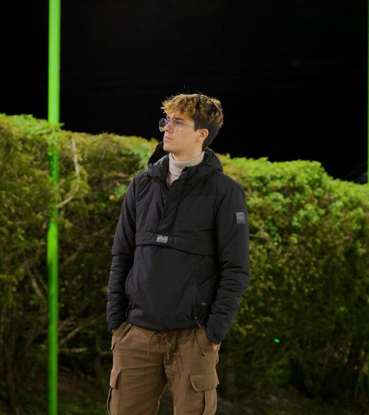

Passionate about Game Development, Cybersecurity & Full-Stack Development
I am a Computer Engineering student at ULACIT, Costa Rica. I am skilled in Java, Python, and C#, with experience using Unity and Blender. I am creative, adaptable, and a strong team player. My goal is to pursue a Master’s in Game Development or Cybersecurity and work for an international company.
A Unity-based 3D game prototype built with C# and Blender assets.
Personal project showcasing backend logic in Python and frontend in HTML/CSS/JS.
Currently studying ethical hacking and penetration testing fundamentals.
Email: yourname@email.com
LinkedIn: linkedin.com/in/yourprofile
GitHub: github.com/tonyvargas312